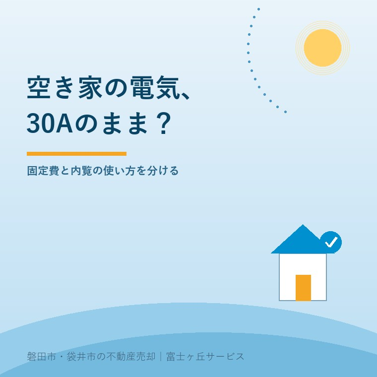
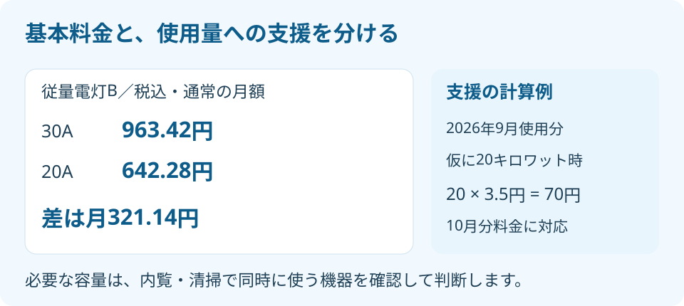

空き家の電気契約アンペア、30Aは必要？
2026年9月29日｜カテゴリ：持ち続けるコスト・制度

この記事の要点
誰も住んでいない実家に、30Aの契約を残す必要はある？
空き家の電気は、内覧や設備確認で同時に使う機器を調べてから契約アンペアを見直します。中部電力ミライズの従量電灯Bでは30Aと20Aの基本料金差は月321.14円です。使用量への支援とは別に考えます。磐田市・袋井市・森町では、介護施設の運営から不動産事業を始めた富士ヶ丘サービスのような会社に、維持費と売却準備を相談する選択肢もあります。
大石浩之（磐田市／不動産業）です。親が住まなくなった家でも、電気の契約だけはそのまま。使用量は減ったのに基本料金が気になる。そんなとき私は、いきなり解約せず、契約容量と今後の使い道を別々に確認するよう案内します。
本記事は2026年9月29日に確認した、中部電力ミライズの中部エリア向け案内を基にしています。磐田市・袋井市の家でも、契約先や料金プランが違えば同じ金額とは限りません。請求書に書かれた会社名とプラン名から読み始めてください。
30Aから20Aの差は月321.14円
中部電力ミライズの従量電灯Bでは、30Aの税込月額基本料金は963.42円、20Aは642.28円です。差は321.14円。同じ単価で通常の基本料金を12か月分比較すると、3,853.68円の差になります。
| 契約電流 | 月額基本料金・税込 | 30Aとの差 |
|---|---|---|
| 10A | 321.14円 | 月642.28円低い |
| 20A | 642.28円 | 月321.14円低い |
| 30A | 963.42円 | 比較の基準 |
| 40A | 1,284.56円 | 月321.14円高い |
表は従量電灯Bの一部を抜き出したものです。同プランの対象は10〜60Aですが、表にない15Aなどの区分もあります。実際の請求額には電力量料金などが加わります。年額の差も、単価が変わらず通常の基本料金がかかる仮定であり、節約額の保証ではありません。
アンペアは、契約で使える電流の大きさを示します。一方、キロワット時は使った電気の量です。人が住まなくなり使用量が減っても、契約アンペアが自動で下がるわけではありません。「留守だから安いはず」と「契約を小さくする」は別の話です。
私は、月額と年額の両方が分かる料金表は比較しやすいと考えます。月321.14円でも、売却までの期間が延びれば支出は積み重なります。ただし、見直しを勧める側には、安くなる額だけでなく、容量を下げた後に何を動かせるかも説明してほしいのです。
なお、同社の計算方法には、全く電気を使用しない月は基本料金を半額とする扱いがあります。使わない月と少量使う月を混ぜて、表の差額が必ず12回減るとは計算しません。実際の請求明細と契約条件を見て比べます。
夏の支援は9月使用分・10月分料金まで
中部電力ミライズの2026年夏の電気・ガス料金支援は、電気の低圧契約では7〜9月使用分、8〜10月分料金が対象です。「9月使用分」と「10月分料金」は対応する表現であり、9月の請求で一律に終わるという意味ではありません。
低圧の値引き単価は7月・9月使用分が1キロワット時当たり3.5円、8月使用分が4.5円です。燃料費調整単価から差し引く方式で、利用者の申請は不要と案内されています。契約アンペアを下げる手続きとは別の仕組みです。
例えば9月使用分が20キロワット時なら、値引き単価を掛けた額は20×3.5＝70円です。これは使用量を仮定した説明用の計算で、実家の請求額ではありません。30Aと20Aの基本料金差321.14円と並べると、どちらの欄を見直しているかがはっきりします。
支援がある間の請求総額だけを見て、容量の見直しは不要と決めないことです。逆に、支援の対象期間が終わるから必ず解約する、という結論にもなりません。夏の空き家を1か月持つ費用と管理と合わせ、固定費と実際の使用量を分けて家計に書き出します。

下げる前に同時使用の予定を並べる
空き家の契約容量は、毎月の使用量だけでなく、同時に動かす機器で考えます。月に一度しか行かなくても、その日に清掃と設備確認が重なれば、照明だけの見回りとは使い方が違います。
私なら、常時動かす設備と、訪問日に使う機器を二列に分けます。前者は防犯設備や浄化槽のブロワーなど、その家に実際にあるもの。後者は照明、掃除機、エアコンなどです。設置されているというだけで必要と決めず、維持すべき設備かを管理担当者にも確認します。
浄化槽など、止めることが管理に関わる設備は、家族の判断だけで電源を切りません。維持管理業者へ運転条件を確認します。冷蔵庫や温水器を残す場合も、中身や再使用の予定、メーカーの取扱いを確認してから判断します。空き家でも電気の用途は家ごとに違います。
機器の消費電力が書かれた銘板や説明書を用意し、同時使用の組合せを契約先に伝えます。「20Aで何台動くか」は、機器の性能や使い方を見ないと答えられません。配線や設備の確認が必要なら、電気工事の専門家に相談してください。
節約額は月321.14円。それで設備確認を一回やり直すなら、安くした意味が薄れる。私はそう考えます。もちろん容量を下げる判断を否定しません。往復の時間と家族の立会いまで含めて比べれば、下げる日を内覧の後にするという選び方もできます。
私も、請求書だけを見せられた段階では、30Aが過大かどうか迷います。常時動く設備が不明だからです。安さを勧める前に用途を聞く。この一手間を省いた提案は、空き家を管理する人の負担を別の日に移すだけになりかねません。
磐田・袋井の内覧で電気を使う日を決める
磐田市・袋井市で売却待ちの実家を管理するなら、内覧、清掃、設備確認の予定を仲介会社と共有してから契約変更を相談します。誰が鍵を持ち、どの設備を動かし、帰る前に何を確認するかを一緒に決めます。
内覧では、明るさの確認だけでなく、買主が設備の動作を知りたい場合があります。通電していなければ、その日に確認できなかった項目が残ります。不動産の内覧準備を参考に、案内日に必要な電気と、見せるだけで動かさない設備を分けてください。
設備が動いたかどうかと、故障が一切ないという保証も別です。確認した日、動かした機器、分かった不具合を記録します。電源が入らず未確認なら、そのまま未確認と伝える。売主の記憶だけで「使えます」と書くより、確認の条件を残す方が説明しやすくなります。
管理を委託している家は、空き家管理サービスで確認する5項目も見ながら、電源操作を依頼の範囲に含むか確認します。見回り担当者に契約変更を知らせず、以前と同じ使い方を期待しないことです。
契約先には、変更できる時期、必要な作業、費用の有無、後で容量を戻す場合の条件を聞きます。短期間の変更を予定しているなら、その予定も先に伝えます。申し込めば内覧前日に必ず間に合う、と家族側で決めつけないようにします。
請求書から今日確認する4項目
電気代の見直しは、契約先、プラン名、契約アンペア、使用量の4項目を書き出すところから始めます。料金月だけでなく、明細に記された使用期間も一緒に残すと、支援の対象月との照合ができます。
次に、今後の内覧と清掃の予定を一行添えます。容量を下げる、現在のまま維持する、使用終了に向けて相談する。この三つを、請求額だけでなく設備と日程で比べます。家族の一人が契約を動かすなら、仲介会社への連絡も同じ日に行う段取りにします。
富士ヶ丘サービスでは、介護と不動産を一体で相談できます。磐田・袋井で施設入居後の実家を考える際も、家族が困らない売却のために、残す設備と維持費を先に整理します。私は、売る時期が未定でも、請求書と設備のメモがそろえば一歩進んだと考えます。
- 会社名・プラン・アンペア・使用量を同じ紙に書く。
- 常時運転の設備と、内覧で同時に使う機器を分ける。
- 変更条件を契約先へ聞き、関係者に日程を伝える。
よくある質問
個別の状況を確認してから、次の手続きを決めてください。
- 空き家なら10Aまで下げても大丈夫ですか？
- 空き家という理由だけでは決められません。照明だけの日と、清掃や内覧で複数の機器を動かす日では必要な容量が異なります。常時動かす設備、同時に使う機器、次の内覧日を整理し、契約先に相談してください。設備の仕様や配線で判断が変わるため、機器を見ずに一律のアンペア数を勧めることはできません。
- 30Aから20Aにすると、請求額は毎月321.14円下がりますか？
- 中部電力ミライズの従量電灯Bで、掲載された通常の月額基本料金だけを比べた差が321.14円です。実際の請求は使用量、燃料費調整額、再生可能エネルギー発電促進賦課金なども含みます。全く電気を使わない月の基本料金の扱いや日割りもあるため、請求総額が毎月同じ額だけ減るとは限りません。
- 料金支援は2026年9月の請求で終わりますか？
- 中部電力ミライズの案内は2026年7〜9月使用分、8〜10月分料金を対象としています。9月使用分と10月分料金は対応する別の表現です。9月の請求で一律に終了とは読めません。低圧の9月使用分の値引き単価は3.5円毎キロワット時で、申請は不要です。対象月と契約を明細で確認してください。

この記事を書いた人：大石浩之（磐田市／不動産業・宅地建物取引士）
富士ヶ丘サービス株式会社。介護施設の運営から不動産事業を始め、磐田市・袋井市・森町で、介護と相続、実家の売却を一体で相談できる窓口を設けています。家族が困らない売却のため、資料と現地の条件を一件ずつ整理します。著者プロフィール
参考にした公式情報
2026年9月29日確認。
本記事は2026年9月29日時点の公開情報と筆者の意見です。制度・数値・手続きは変更されることがあります。重要事項説明・税務・登記・相続などの個別判断は、担当宅建士・税理士・司法書士・弁護士などの専門家に確認を。